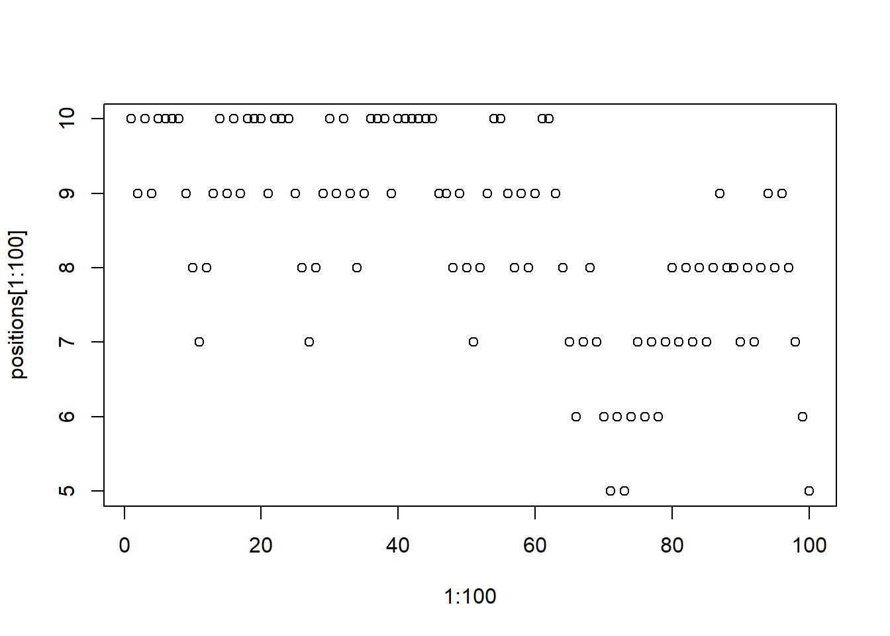
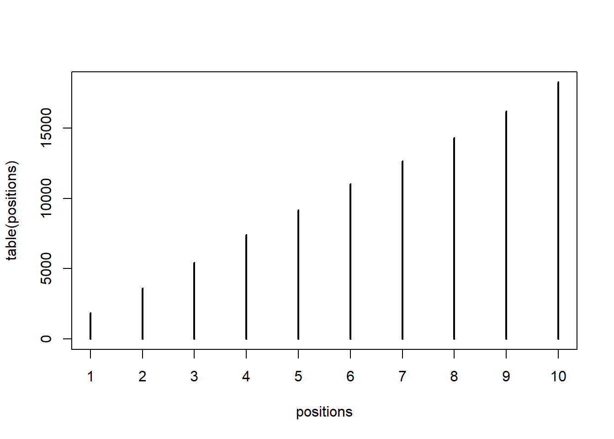
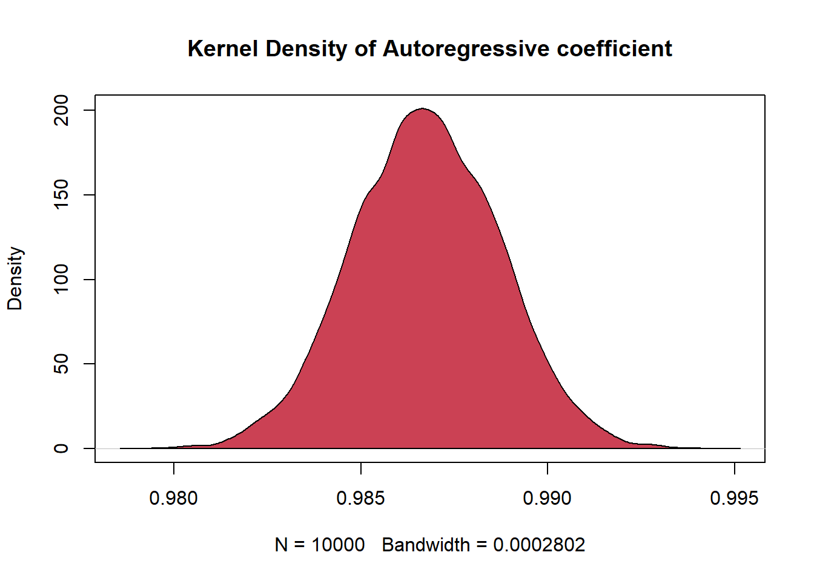
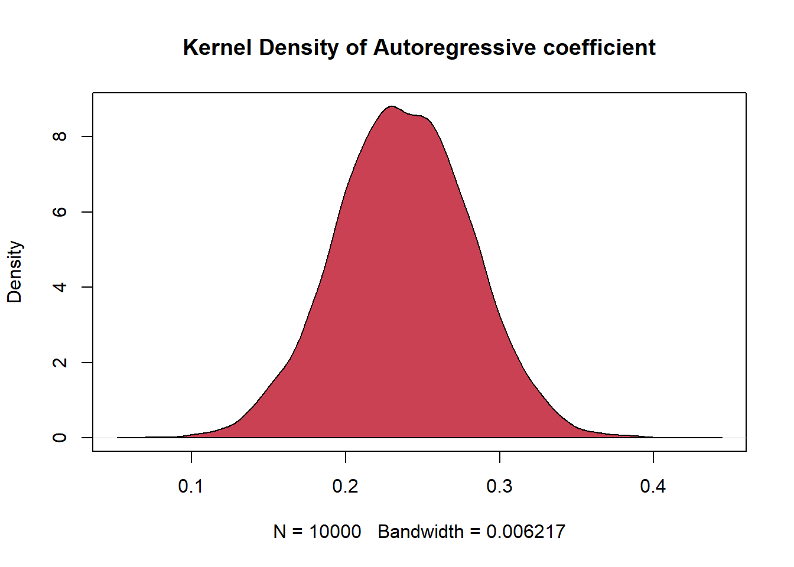

num_weeks <- 1e5
positions <- rep(0,num_weeks)
current <- 10
for ( i in 1:num_weeks ) {
## record current position
positions[i] <- current
## flip coin to generate proposal (Step b)
proposal <- current + sample( c(-1,1) , size=1 )
## now make sure he loops around the archipelago
if ( proposal < 1 ) proposal <- 10
if ( proposal > 10 ) proposal <- 1
## move? (s probability)
prob_move <- proposal/current
current <- ifelse( runif(1) < prob_move , proposal , current )
}Metropolis-Hastings from Scratch: Bayesian Estimation of an AR(1) Model in R
Bayesian
MCMC
Metropolis-Hastings
AR(1)
simulation
time series
R
A practical guide to the Metropolis-Hastings algorithm, building intuition through the Good King Markov parable before implementing it in R to estimate an AR(1) model. Compares direct sampling from a Normal-inverted-Gamma posterior with the random-walk Metropolis-Hastings sampler, covering proposal distributions, acceptance probabilities and convergence.
The estimation of posterior probability distributions using a stochastic process known as Markov chain Monte Carlo (MCMC). Here we’ll produce samples from the joint posterior without maximizing anything. Instead of having to lean on quadratic and other approximations of the shape of the posterior, now we’ll be able to sample directly from the posterior without assuming a Gaussian, or any other, shape.
The cost of this power is that it may take much longer for our estimation to complete, and usually more work is required to specify the model as well. But the benefit is escaping the awkwardness of assuming multivariate normality
1 Metropolis-Hasting algorithm
A way to draw samples from a target posterior density \(Pr(\Theta|y)\) is to use Markov chain techniques, where each sample only depends on the last sample drawn. Starting with an approximate target density, the aproximations are improved with each step of the sequential procedure.
In other words, the sequence of samples is converging to samples drawn at random from the target distribution. A random walk from a Markov chain is simulated, where the stationary distribution of the chain is the target density, and the simulated values converge to the stationary distribution or the target density.
The main concept in a Markov chain simulation is to devise a Markov process whose stationary distribution is the target density. The simulation must be long enough so that the present samples are close enough to the target. It has been shown that this is possible and that convergence can be accomplished.
The general scheme for a Markov chain simulation is to create a sequence \(\Theta_t \quad t=1,2...\) by beginning at some value \(\Theta_0\) and at the t-th stage, select the present value from a transition function \(Q_t(\Theta_t|\Theta_{t-1})\) , where the present value \(\Theta_t\) only depends on the previous one via the transition function.
The value of the starting value \(\Theta_0\) is usually based on a good approximation to the target density. In order to converge to the target distribution, the transition function must be selected with care.
1.1 The algorithm
Suppose the target density \(Pr(\Theta|y)\) can be computed, then the Metropolis technique generates a sequence \(\Theta_t \quad t=1,2...\) with a distribution that converges to a stationary distribution of the chain.
Briefly, the steps taken to construct the sequence are: a. Draw the initial value o starting point \(\Theta_0\) from a starting distribution \(Pr_0(\Theta)\)some approximation to the target density,
For \(t=1,2,...\) :
b. Sample a proposal \(\Theta_*\) from the proposal distribution \(G(\Theta_*| \Theta_{t-1})\) c. Calculate the ratio of densities \[ s=\frac{Pr(\Theta_*|y)}{Pr(\Theta_{t-1}|y)} \] d. Set
\[ \Theta_t = \begin{cases} \Theta_* & with \quad probability \quad min(s,1) \\ \Theta_{t-1} & otherwise \end{cases} \]
To summarize the above: - If the jump given by step b above increases the posterior density, let \(\Theta_t=\Theta_*\); - However, if the jump decreases the posterior density, let \(\Theta_t=\Theta_*\) with probability \(s\), otherwise let \(\Theta_t=\Theta_{t-1}\). - One must show the sequence generated is a Markov chain with a unique stationary density that converges to the target distribution
1.2 A story about Good King Markov
For the moment, forget about posterior densities and MCMC. Consider instead the tale of Good King Markov. King Markov was a benevolent autocrat of an island kingdom, a circular archipelago, with 10 islands. Each island was neighbored by two others, and the entire archipelago formed a ring. The islands were of different sizes, and so had different sized populations living on them. The second island was about twice as populous as the first, the third about three times as populous as the first, and so on, up to the largest island, which was 10 times as populous as the smallest.
The Good King was an autocrat, but he did have a number of obligations to his people. Among these obligations, King Markov agreed to visit each island in his kingdom from time to time. Since the people loved their king, each island preferred that he visit them more often. And so everyone agreed that the king should visit each island in proportion to its population size, visiting the largest island 10 times as often as the smallest, for example.
The Good King Markov, however, wasn’t one for schedules or bookkeeping, and so he wanted a way to fulfill his obligation without planning his travels months ahead of time. Also, since the archipelago was a ring, the King insisted that he only move among adjacent islands, to minimize time spent on the water.
The king’s advisor, a Mr Metropolis, engineered a clever solution to these demands. We’ll call this solution the Metropolis algorithm. Here’s how it works. 1. Wherever the King is, each week he decides between staying put for another week or moving to one of the two adjacent islands. To decide, he flips a coin. 2. If the coin turns up heads, the King considers moving to the adjacent island clockwise around the archipelago. If the coin turns up tails, he considers instead moving counterclockwise. Call the island the coin nominates the proposal island. 3. Now, to see whether or not he moves to the proposal island, King Markov counts out a number of seashells equal to the relative population size of the proposal island.
So for example, if the proposal island is number 9, then he counts out seashells. Then he also counts out a number of stones equal to the relative population of the current island.
So for example, if the current island is number 10, then King Markov ends up holding 10 stones, in addition to the 9 seashells. 1. When there are more seashells than stones, King Markov always moves to the proposal island.
But if there are fewer shells than stones, he discards a number of stones equal to the number of shells. So for example, if there are 4 shells (Proposal island) and 6 stones (Current Island), he ends up with 4 shells and 6 - 4 = 2 stones. Then he places the shells and the remaining stones in a bag. He reaches in and randomly pulls out one object. If it is a shell (Proposal island), he moves to the proposal island. Otherwise, he stays put another week.
As a result, the probability that he moves \(s\) is equal to the number of shells divided by the original number of stones.
\[ s=\frac{Pr(\Theta_*|y)}{Pr(\Theta_{t-1}|y)} \]
This procedure may seem baroque and, honestly, a bit crazy. But it does work. The king will appear to move around the islands randomly, sometimes staying on one island for weeks, other times bouncing around without apparent pattern. But in the long run, this procedure guarantees that the king will be found on each island in proportion to its population size.
Results of the king following the Metropolis algorithm. The frist plot shows the king’s position (vertical axis) across weeks (horizontal axis). In any particular week, it’s nearly impossible to say where the king will be.
plot( 1:100 , positions[1:100] )
The right-hand plot shows the long-run behavior of the algorithm, as the time spent on each island turns out to be proportional to its population size.
plot( table( positions ) )
In real applications, the goal is of course not to help an autocrat schedule his journeys, but instead to draw samples from an unknown and usually complex target distribution, like a posterior probability distribution.
• The “islands” in our objective are parameter values, and they need not be discrete, but can instead take on a continuous range of values as usual.
• The “population sizes” in our objective are the posterior probabilities at each parameter value.
• The “weeks” in our objective are samples taken from the joint posterior of the parameters in the model.
1.3 Estimating AR(1) with M-H.
Load the data
library(expm)Warning: package 'expm' was built under R version 4.5.3Cargando paquete requerido: Matrix
Adjuntando el paquete: 'expm'The following object is masked from 'package:Matrix':
expmlibrary(matrixStats)Warning: package 'matrixStats' was built under R version 4.5.3library(pracma)Warning: package 'pracma' was built under R version 4.5.3
Adjuntando el paquete: 'pracma'The following objects are masked from 'package:expm':
expm, logm, sqrtmThe following objects are masked from 'package:Matrix':
expm, lu, tril, triulibrary(mvtnorm)Warning: package 'mvtnorm' was built under R version 4.5.3dta <- read.csv2(url("https://github.com/AndresMtnezGlez/heptaomicron/raw/main/usdeur.csv"), skip = 4,sep = ",")
dta <- as.matrix(as.numeric(dta$X.US.dollar..))Load the matrices
y <- 100*log(dta[,1])
n <- length(y)
X = cbind(y[1:n-1 ], matrix(1,n-1, 1))
y <- y[2:n]
#% measure the dimensions
#[T, K] = size(X)
dim_X <- dim(X)
T <- dim_X[1]
K <- dim_X[2]Estimation
b_hat <- round(solve(t(X)%*%X)%*%t(X)%*%y, digits = 5)
s_hat = t((y - X%*%b_hat))%*%(y - X%*%b_hat)
sigma2_hat = s_hat/(T-K-2);Specify an informative normal-inverted gamma prior
\[ Pr(\beta, \sigma^2) = Pr(\beta | \sigma^2) Pr(\sigma) \]
Where
\[ Pr(\beta |\sigma^2) = N (\tilde{\beta},\sigma, \tilde{Q})\\ Pr(\sigma) = IG(\tilde{s}, \tilde{v}) \]
vtil = 5;
stil = sigma2_hat*(vtil-2);
#% this ensures that E(sigma2)=sigma2hat
btil = matrix(0, K,1)
btil[1] <- 1
Qtil = diag(K)
invQtil = solve(Qtil)
Ptil = t(chol(solve(Qtil)))Prior in terms of y til and x til from the analystical solution. To do so we draw
Define ‘dummy observations’
We have to bear in mind that our assumption is that \(\sigma^2\) is inverted gamma with scale \(\tilde{s}\) and degrees of freedom \(\tilde{v}\)
\[ Pr(\sigma^2) = \propto(\sigma^2)^{-(\tilde{v}+2)/2} exp(-1/2\frac{\tilde{s}}{\sigma^2}) \]
So \(Pr(\beta, \sigma^2)\) is a Normal inverted Gamma.
We first define:
\[ \tilde{y} = \begin{pmatrix} \tilde{s}^{1/2} \\ \tilde{P}\tilde{\beta}\end{pmatrix} \\ \tilde{X} = \begin{pmatrix} 0 \\ \tilde{P}\end{pmatrix} \\ \tilde{v} = \tilde{v} + T \]
ytil = rbind((stil)^(1/2), Ptil%*%btil)
Xtil = rbind(matrix(0, 1,K), Ptil)And then we can stack matrices as:
\[ \tilde{y} = \begin{pmatrix} \tilde{y} \\y\end{pmatrix} \\ \tilde{X} = \begin{pmatrix} \tilde{X} \\X\end{pmatrix} \\ \tilde{v} = \tilde{v} + T \]
ytil = rbind((stil)^(1/2), Ptil%*%btil)
Xtil = rbind(matrix(0, 1,K), Ptil)Stacked sample
ybar = rbind(ytil, as.matrix(y) )
Xbar = rbind(Xtil, X)
vbar = vtil + TParameters for the posterior
#OLS on the augmented sample
bbar = mldivide(Xbar, ybar)
# SSR of the augmented sample%
sbar = t((ybar - Xbar%*%bbar))%*%(ybar - Xbar%*%bbar)
#=inv(Xbar'*Xbar)
Qbar = mldivide((t(Xbar)%*%Xbar), diag(K))Direct sampling from the posterior
M = 1e4; # number of draws
sigma2_draws = matrix(NA, M,1); # sigma
b_draws = matrix(NA, M,K); # beta
for (m in 1:M){
# draw sigma2 from inverted gamma (using a normal 0,1)
taubar<-randn(vbar,1)
sigma <- mldivide(sbar, (t(taubar)%*%taubar))
sigma <- as.numeric(sigma)
sigma2_draws[m]<- sigma
# draw b from a multivariate normal
b_draws[m,]=rmvnorm(1, bbar,sigma*Qbar);
}Let’s plot
d <- density(b_draws[,1])
plot(d, main="Kernel Density of Autoregressive coefficient")
polygon(d, col="#cb4154", border="black")
Now for the incercept
d <- density(b_draws[,2])
plot(d, main="Kernel Density of Autoregressive coefficient")
polygon(d, col="#cb4154", border="black")